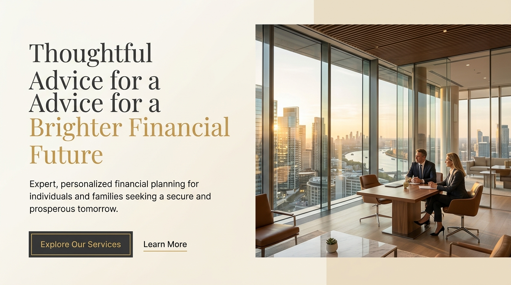

A boutique financial services firm and family office built on seventy-five years of collective wisdom, a client-first ethos, and enduring relationships.

Vintage Finvest Services Pvt. Ltd. is a premier financial services firm and family office founded on foundational principles of uncompromised fiduciary duty and stewardship.
Our clients include high net-worth individuals, leading business dynasties, senior bureaucrats, CxOs, academicians, and corporate treasuries who seek calm, calculated wisdom rather than speculative noise.
At Vintage, every relationship is long-term. Unlike commercial banks where relationship managers rotate constantly, our principals personally guide and preserve your wealth across decades and market cycles.
Three pillars that define our institutional rigor and client commitment.
Vintage has a dedicated in-house research team responsible for maintaining a strict "white-list" of investment-worthy mutual funds and PMS portfolios. Clear separation of research from distribution guarantees zero bias.
Our customer support and operational team is structured to resolve portfolio actions seamlessly. Painstakingly refined over twenty years, we handle compliance, taxation reporting, and corporate actions proactively.
We provide end-to-end wealth governance — from dynamic asset allocation to private family trusts, wills, and corporate treasury management. You never need multiple fragmented advisors.
Ashwin is a veteran of the mutual fund industry. He is an alumnus of Delhi University and FORE School of Management. Ashwin started his career in 1995 when the mutual fund industry in India was just two years old. Even back then, Ashwin believed in a transparent approach and sterling service. He quickly acquired clients, most of whom still work with him.
Ashwin's clients are high net worth and ultra-high net worth individuals, senior bureaucrats, business families, and CXO level executives. His clients also include young achievers from India's premier institutes like IITs and IIMs. Ashwin likes to work closely with his clients. He helps them identify their financial goals and assists them in developing a comprehensive financial plan. He also has a strong commitment towards a high-touch and relationship-oriented approach.
His grasp of financial markets and his philosophy of keeping clients' interest above everything else has moved his practice from strength to strength over six major financial crises. When not working with clients, Ashwin studies the global financial markets and macroeconomic trends.
Connect on LinkedInVineet is a seasoned professional with over twenty-five years of experience in banking and financial services. He started his career with ANZ Grindlays Bank (later Standard Chartered Bank) in 1992. He then went on to join ICICI Prudential Asset Management Company, where he discovered his passion for capital markets and Mutual Fund distribution.
In his last assignment, he was heading the Investment Services for North with RBL bank, where he had set up the vertical from scratch. His previous experience with RBS as Investment Services Head helped him succeed and excel in this role.
In a career spanning over twenty-five years, Vineet has been instrumental in advising high net-worth, ultra high net-worth individuals as well as clients in designing their investment portfolio. Vineet is passionate about keeping his clients' interest above everything else. Vineet is a graduate of the University of Delhi. He has done his MBA in Marketing from Amity University.
Connect on LinkedInFor Ajay Bajaj, comprehension of the power of investments sprouted as early as a school-going teenager. In the past 35 years, he has persistently honed this passion for investments into a fine-tuned craft, creating wealth for his cherished investors.
Ajay started his professional journey with R R Financials before moving to SMIFS Capital Markets, BNP Paribas - Retail Banking, and Bharat Bhushan & Co. He gained invaluable insights in financial planning while serving a wide array of investors, from HNIs and bureaucrats to corporate houses and foreign services professionals to institutions.
Along with customised investment portfolios bespoke to each investor's objectives — from a SIP of ₹1,000/month to a tranche of ₹50 crore — Ajay has also accumulated astute knowledge on taxation to increase efficient returns. He is a firm believer in "You work hard for Money, Let your Money work harder for YOU."
The stock market has been Ajay's 'karmabhoomi' since the Sensex was at 500 to now, as it majestically touches 60,000 — through six significant crashes and multiple rallies.
Connect on LinkedIn